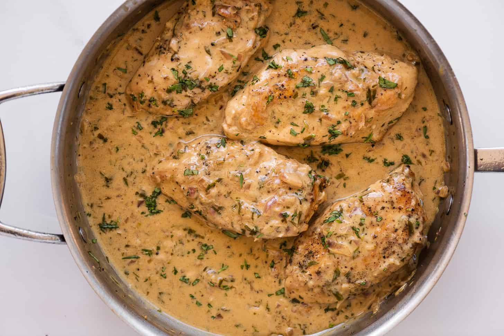

This is one of the first recipes I ever feel like I mastered. It's a juicy chicken breast covered in dairy. With a muted but exotic flavor you're sure to like this dish if you like juicy chicken and white pepper. It's an old celtic dish, in fact this exact meal was found in settlements dating back to 3500 B.C.E.
Here's the ingredients you'll need:
- 4 Chicken Breasts
- 1 cup of Heavy Whipping Cream
- 3 sticks of butter
- 4 Tbs Tarragon
- 1/2 cup parsley
- 1 tsp Flour
- Salt and White Pepper to your liking
So heres how to make it!
- Start by melting a stick of butter and mixing about half of the tarragon.
- Lay out your chicken breast and cover on both sides of each with the butter-tarragon mixture,
- Bake your basted chicken breasts in a cookie sheet at 250F for about 25 minutes or until the chicken looks about halfway cooked, this is to save the juices
- In a skillet, add the parsley, flour, chicken juices, flour, the rest of the tarragon, and about 4tbs cold water.
- Whisk the mixture until for about 10 minutes at a slow boil, in order to reduce it by half, but no more.
- Once the mixture is reduced, toss the chicken into it for about 10-15 minutes on either side.
- You're done!, I usually serve this with red potatoes in a butter sauce.